방송통신기사 (2008-03-02 기출문제)
1과목: 디지털 전자회로
1. 전압이득이 60[dB]인 저주파 전압증폭기가 10[%]의 왜율을 가지고 있을 때 이것을 0.1[%] 정도로 개선하는 방법은?
- 궤환율이 약 20[dB]인 부궤환을 걸어준다.
- 궤환율이 약 20[dB]인 정궤환을 걸어준다.
- 증폭도를 10[dB] 낮게 한다.
- 전압변동율을 1/10 로 낮게 한다.
(정답률: 37%)

2. 다음 중 그림과 같은 정류회로에서 부하저항 RL의 소비전력[W]은 약 얼마인가?(단, 입력전압 120V, 부하저항 240Ω, 다이오드는 이상적이고, 권선비는 1차측 : 2차측 = 2:1 이다.)
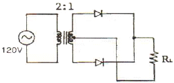
- 0.52
- 1.74
- 3.04
- 9.55
(정답률: 알수없음)
3. 다음 논리회로의 출력(X)이 옳은 것은?
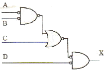
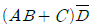
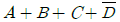
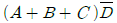
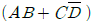
(정답률: 알수없음)
4. RC 결합 CE 증폭기의 저주파 응답에서 결합콘덴서의 역할에 대한 설명으로 가장 적합한 것은?
- 결합콘덴서의 용량은 소신호에 대해 거의 단락상태가 되도록 커야한다.
- 결합콘덴서는 입력의 직류성분만을 통과시켜야 한다.
- 입력신호의 진폭이 커짐에 따라 콘덴서의 용량도 증가하여야 한다.
- 입력주파수가 작아짐에 따라 콘덴서의 용량도 감소해야한다.
(정답률: 30%)
5. 증폭기의 입력 임피던스를 증가시키고 출력 임피던스를 감소시키기 위해서는 어떤 방법의 부궤환이 적합한가?
- 출력전압을 샘플링해서 입력신호와 직렬로 가한다.
- 출력전류를 샘플링해서 입력신호와 직렬로 가한다.
- 출력전압을 샘플링해서 입력신호와 병렬로 가한다.
- 출력전류를 샘플링해서 입력신호와 병렬로 가한다.
(정답률: 알수없음)
6. 다음 중 트랜지스터 접지방식에서 전류이득과 전압이득이 모두 큰 것은?
- 이미터 접지
- 베이스 접지
- 컬렉터 접지
- 이미터 플로워
(정답률: 알수없음)
7. 다이오드 직선검파회로에서 변조도 50[%], 진폭 [V]인 AM 피변조파가 인가되었을 때 부하저항 RL에 나타나는 출력전압의 실효치는 몇 [V]인가? (단, 검파효율은 80[%]라고 한다.)
- 10
- 8
- 6
- 4
(정답률: 알수없음)
8. 다음 그림의 연산증폭기 회로에서 출력 VO가 옳은 것은?
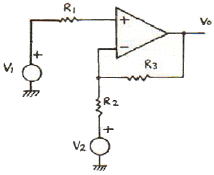
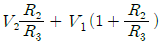
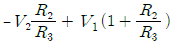
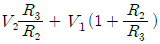
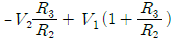
(정답률: 알수없음)
9. 다음 이상 발진기의 발진주파수는 약 몇 [kHz]인가? (단, R=4[kΩ], C=0.01[μF])
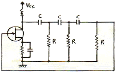
- 1.6
- 2.3
- 3.4
- 4.2
(정답률: 알수없음)
10. 다음 중 그림의 회로에서 입력전압 Vi와 출력전압 Vo의 전달 특성은?
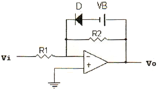
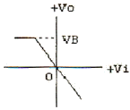
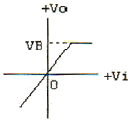
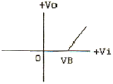
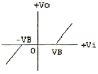
(정답률: 알수없음)
11. 전압 증폭회로에서 대역폭을 4배로하려면 증폭이득을 약몇 [dB] 감소시켜야 하는가?
- 0.25 [dB]
- 4 [dB]
- 6 [dB]
- 12 [dB]
(정답률: 알수없음)
12. 그림과 같은 비안정 멀티바이브레이터의 설명으로 틀린것은?
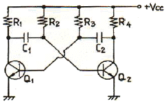
- Q1이 OFF일 때, Q2는 포화상태이다.
- Q1이 포화일 때, Q2는 포화를 유지한다.
- 구형파를 발생하는 회로이다.
- C1 및 C2의 크기에 따라 주파수가 결정된다.
(정답률: 40%)
13. 다음 3변수 카르노도가 나타내는 함수로 옳은 것은?
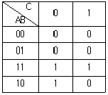
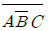
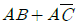
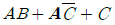
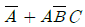
(정답률: 알수없음)
14. 그림 (a)의 회로에 그림 (b)와 같은 전압이 인가될 때 정상 상태에서의 VO는?
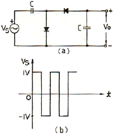
- 1[V]의 진폭을 갖는 양의 펄스
- 1[V]의 진폭을 갖는 음의 펄스
- +1[V]의 일정한 DC 전압
- -2[V]의 일정한 DC 전압
(정답률: 알수없음)
15. 그림과 같이 T형 플립플롭을 접속하고 첫 번째 플립플롭에 1000[Hz]의 구형파를 입력하면 최종 플립플롭에서 출력단의 주파수[Hz]는?
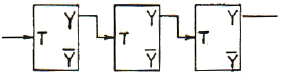
- 1000
- 500
- 250
- 125
(정답률: 40%)
16. I=Ic(1+msin Wat)sin Wct인 피변조파의 전류가 임피던스 값이 R인 회로에 흐를 때 상측대파의 평균전력은? (단, m은 변조도이다.)
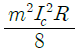
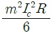
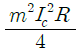
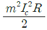
(정답률: 30%)
17. MS 플립플롭의 진리표에서 JN=1, KN=0 에서 클럭펄스를 인가할 때, 출력 QN+1의 값은?
- QN
- 0
- 1
- 부정
(정답률: 알수없음)
18. 그림과 같이 해독기에 BCD 입력이 가해지고 있다. 해독기는 BCD 입력이 1001(ABCD)인 때만 출력이 1을 나타낸다고 할 경우 다음 중 출력 Y를 불 대수식으로 표현하면?
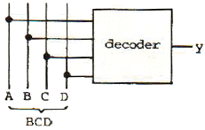
- AD
- AB
- AC
- BCD
(정답률: 알수없음)
19. NOR 게이트로 구성된 RS 플립플롭에서 이전의 상태를 유지하기 위해서는 RS가 어떤 경우일 때인가?
- RS = 01
- RS = 11
- RS = 10
- RS = 00
(정답률: 알수없음)
20. 다음 중 신호의 지연시간이 가장 짧은 것은?
- TTL
- ECL
- CMOS
- RTL
(정답률: 알수없음)
2과목: 방송통신 기기
21. CATV에서 지상파 TV를 수신하여 재전송할 경우 수신된 TV 신호를 중간주파수로 변환해서 신호의 레벨조정과 증폭 기능을 수행하는 것은?
- 변조기(Modulator)
- 신호처리기(Signal Processor)
- 혼합기(Combiner)
- 분배기(Divider)
(정답률: 80%)
22. 다음 중 복사된 전파가 주로 지표면을 따라 진행하는 전파는?
- 중파, 장파
- 단파
- 초단파
- 극초단파
(정답률: 알수없음)
23. 위성방송의 유료 시청방식에서 비가입자가 시청할 수 없게 하기 위한 것은?
- 커버리지(coverage)
- 언커버리지(uncoverage)
- 스크랩블(scramble)
- 디스크램블(descramble)
(정답률: 알수없음)
24. 다음 중 위성중계기의 구성요소가 아닌 것은?
- 송신부
- 주파수변환부
- 튜너
- 증폭기
(정답률: 알수없음)
25. 다음 중 UHF와 VHF를 비교할 때 옳지 않은 것은?
- UHF가 VHF에 비해 파장이 크다.
- UHF가 VHF에 비해 안테나 크기가 작다.
- UHF가 VHF에 비해 주파수가 높다.
- UHF가 VHF에 비해 가용채널이 많다.
(정답률: 알수없음)
26. 다음 중 텔레비전 공동시청 안테나시설 등에서 입력시 호 에너지를 간선에서 지선으로 나누는 역할을 하는 것은?
- 정합기
- 분기기
- 분사기
- 감쇠기
(정답률: 알수없음)
27. 여러 개의 입력 마이크나 녹음기, 턴테이블, 라인입력, 음악효과 등을 혼합 처리해서 VTR이나 TAPE Recorder에 녹음하거나 앰프를 통해 스피커로 보내는 것은?
- 콘솔(음향혼합)
- 녹화기
- 프리앰프
- 영상혼합기
(정답률: 알수없음)
28. 위성을 이용하여 뉴스 현장에서 직접 뉴스 소재를 취재해서 송ㆍ수신이 가능한 것은?
- EFP(Electronic Field Production)
- ENG(Electronic News Gathering)
- SNG(Satellite News Gathering)
- FPU(Field Pick-up Unit)
(정답률: 알수없음)
29. 다음 중 TV의 음성회로에 디엠퍼시스 회로를 넣어 사용하는 목적은?
- 저주파 영역의 특성을 보정하기 위하여
- 버즈음을 제거하기 위하여
- 고주파 영역의 특성을 보정하기 위하여
- 음성신호를 강하기 하기 위해서
(정답률: 55%)
30. 다음 중 컴퓨터상에서 다수의 인원이 동시에 영상을 편집하는 데 가장 적합한 디지털 편집시스템은?
- LE(Linear Editor)
- Betacam VCR
- NLE(Non Linear Editor)
- Playout Server
(정답률: 알수없음)
31. 스위프 신호발생기(sweep signal source)에 대한 설명으로 가장 적합한 것은?
- 점유주파수 대역폭의 허용오차를 측정하는 측정기이다.
- 출력 신호와 주파수가 일정한 범위에서 반복하여 변화하는 신호 발생기이다.
- 2차 상호변조를 측정하여 왜곡을 분석하는 기기이다.
- 신호 레벨미터를 내장하고 있어 모든 주파수 특성을 측정하는 계측기이다.
(정답률: 알수없음)
32. 다음 중 주파수변조에 비하여 진폭변조의 특징에 대한 설명으로 틀린 것은?
- 피변조파가 점유하는 주파수 대역이 좁다.
- 변복조 회로 설계가 비교적 간단하다.
- S/N 비가 개선된다.
- 주파수 이용률이 좋다.
(정답률: 60%)
33. 다음 중 관 CATV 전송방식의 일반적인 특징이 아닌것은?
- 저손실로 전송거리가 연장된다.
- 광대역으로서 대량의 정보전송이 가능하다.
- 광케이블을 간선으로 사용하여 쌍방향 전송이 가능하다.
- 전자유도와 낙뢰의 영향을 받는다.
(정답률: 알수없음)
34. 다음 중 컬러비(Color Bar)에 대해 정밀하고 반복된 신호를 만들어서 시험과 조정 절차를 위해 사용되는 것은?
- TV 패턴신호 발생기
- 웨이브폼 모니터
- 벡터스코프
- 스펙트럼 아날라이저
(정답률: 알수없음)
35. 다음 중 스펙트럼 분석기로 측정할 수 없는 것은?
- 신호의 주파수 및 레벨
- 주파수 대역폭
- 잡음 전력 및 C/N 비
- 신호의 위상
(정답률: 50%)
36. 영상신호에 있어서 컬러신호의 품질을 측정하는 요소가 아닌 것은?
- 컬러레벨(Color level)
- 채도레벨(Chroma level)
- 포화도(Saturation)
- 콘트라스트(Contrast)
(정답률: 알수없음)
37. 다른 국의 VTR에 의한 녹화 재생이나 다원중계 등 비동기의 영상신호를 필드 또는 프레임 메모리에 기록하여 이것을 자국의 동기신호에 맞추어 읽어내는 장치는?
- TBC
- FS
- ADC
- DVD
(정답률: 알수없음)
38. 다음 중 지상으로부터의 전파를 수신하여 주파수를 변환한 다음 증폭해서 다시 지상으로 발사하는 기능을 수행하는 위성은?
- 수동위성
- 능동위성
- 추적위성
- 제어위성
(정답률: 73%)
39. 다음 중 방송용 서버에서 콘텐츠의 검색 및 조회에 이용되는 기술로 가장 적합한 것은?
- MPEG-1
- MPEG-2
- MPEG-4
- MPEG-7
(정답률: 알수없음)
40. 케이블 방송에서 수시한 지상파 방송을 재전송하기 위하여 여러 개의 신호를 하나로 묶는데 사용도는 것은?
- 변조기
- 복조기
- 다중화기
- 신호처리기
(정답률: 알수없음)
3과목: 방송미디어 공학
41. 뉴스, 일기예보, 주식시세 등 여러 가지 정보를 글자나 그림으로 만든 후, 이를 부호화하여 TV(NISC 방식)전파의 빈틈에 Digital Data의 형태로 삽입하여 송출하는 것은?
- Videotex
- VAN(Value Added Network)
- ISDN(Integrated Service Digital Network)
- Teletext
(정답률: 알수없음)
42. 다음 중 고품위 텔레비전(HDTV)에 관한 설명으로 틀린 것은?
- 음성 부호화기법으로 DPCM 등이 적용된다.
- 9:16의 화면 종횡비를 이룬다.
- 525 라인의 수평해상도를 갖는다.
- NTSC, PAL 등의 방식과 비교해서 해상도가 좋다.
(정답률: 알수없음)
43. 다음 중 방송계 뉴미디어에 속하지 않는 것은?
- 디지털 TV
- DVD
- 디지털 종합유선방송
- 인터넷 방송
(정답률: 80%)
44. 다음 전송 매체 중 동시에 가장 많은 정보량을 보낼 수 있는 것은?
- 광 케이블
- 동축 케이블
- 쌍연식 케이블
- 전화 케이블
(정답률: 80%)
45. 국내 디지털 TV에서 채택하고 있는 영상압축 신호처리 방식은?
- NHEG
- MPEG-2
- JAVA
- JPEG
(정답률: 80%)
46. 다음 중 마이크 지향특성의 지향각이 가장 큰 것은?
- Cardioid
- Hyper Cardioid
- Omni Directional
- Super Cardioid
(정답률: 알수없음)
47. 다음 중 조명의 주 목적이 아닌 것은?
- 입체감과 질감을 만든다.
- 반향(echo)을 얻는다.
- 필요한 밝기를 얻는다.
- 컬러 밸런스를 만든다.
(정답률: 알수없음)
48. 다음 중 멀티미디어(multimedia)의 응용으로 관계가 먼 것은?
- 원격교육
- 화상회의
- 원격진료
- 라디오 청취
(정답률: 알수없음)
49. 다음 중 뉴미디어 관련 기술과 가장 거리가 먼 것은?
- 정보처리 기술
- 통신 기술
- 제조생산 기술
- 반도체 기술
(정답률: 알수없음)
50. 다음 중 아날로그 컬러 TV의 방송 방식이 아닌 것은?
- SECAM
- NTSC
- DAB
- PAL
(정답률: 60%)
51. MPEG-1 영상부호화 기법과 MPEG-2 영상부호화 기법 모두에서 지원하는 색도형식(Chromatic format)은?
- 4:2:0
- 4:2:2
- 4:4:4
- 4:0:0
(정답률: 알수없음)
52. 다음 중 색차신호인 I 신호와 Q 신호의 위상차는?
- 45도
- 90도
- 135도
- 185도
(정답률: 알수없음)
53. 영상신호는 휘도신호의 에너지 스펙트럼 사이에 색신호(Q)의 에너지를 끼워넣어 전송한다. 다음 중 Q 신호의 대역폭은?
- 0.5[MHz]
- 1.5[MHz]
- 3.58{MHz]
- 4.5[MHz]
(정답률: 알수없음)
54. 다음 중 일반적인 프로그램의 편성과 거리가 가장 먼 것은?
- 프로그램의 제작
- 프로그램의 시간
- 프로그램의 선택
- 프로그램의 배치
(정답률: 알수없음)
55. 다음 중 ( ) 안에 순서대로 가장 알맞은 용어는?
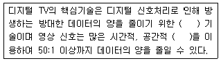
- 억압, 단일성
- 압축, 단일성
- 생략, 유연성
- 압축, 중복성
(정답률: 알수없음)
56. 다음 중 동영상 관련 압축 알고리즘이 아닌 것은?
- JPEG
- MPEG-2
- H.254
- DVI
(정답률: 알수없음)
57. 다음 중 멀티미디어/하이퍼미디어 정보의 표현, 정보교환 등에 이용되는 통화상의 국제표준은?
- MPEG-1
- MHEG
- JPEG
- MPEG-4
(정답률: 알수없음)
58. 다음 중 주사에 따라 생기는 전기적인 변화로서 정지 또는 이동하는 사물의 순간적 영상을 전송하기 위한 신호는?
- 영상 신호
- 음향 신호
- 파일럿 신호
- 반송파 신호
(정답률: 알수없음)
59. 2개의 음이 동시에 존재할 때, 한쪽 음이 다른 한쪽의 음에 의해 은폐되어 들리지 않는 현상은?
- 마스킹 현상
- 바이노럴 현상
- 하스 현상
- 하울림 현상
(정답률: 알수없음)
60. 다음 중 대기의 온도가 15℃인 경우 음이 공기 중에 전달되는 속도[m/sec]는 약 얼마인가?
- 340
- 360
- 420
- 570
(정답률: 알수없음)
4과목: 방송통신 시스템
61. 다음 중 CATV의 사업주체가 아닌 것은?
- SO(System Operator)
- NO(Network Operator)
- PO(Program Operator)
- PP(Program Provider)
(정답률: 알수없음)
62. VSB 변조방식에 대한 설명으로 틀린 것은?
- SSB와 DSB의 장점을 취한 통신방식이다.
- VSB의 대역폭은 SSB보다 약 1.25배 정도이다.
- 포락선 검파기로 검파가 불가능하다.
- DSB보다 선택성 페이딩의 영향을 비교적 덜 받는다.
(정답률: 알수없음)
63. 다음 중 디지털 통신시스템을 설계하는 경우 달성하고자 하는 목표가 아닌 것은?
- 방해신호에 대한 최대 방지
- 최대의 소모 전력
- 최소의 채널 대역폭
- 최대의 데이터 전송율
(정답률: 알수없음)
64. 다음 주파수대 중 방송에 사용되지 않는 것은?
- MF
- VHF
- UHF
- EHF
(정답률: 알수없음)
65. TV 주사선 중 수직귀선시간의 비어 있는 라인에 시험신호를 실어 프로그램 송출 중에도 전송로 등의 특성을 모니터하기 위한 신호는?
- DCR 신호
- VITS 신호
- Color Bar 신호
- VIR 신호
(정답률: 알수없음)
66. 색차신호의 크기가 I=3, Q=4 일 때 합성신호인 C 신호의 크기는?
- 3
- 4
- 5
- 6
(정답률: 알수없음)
67. 다음 중 국내 디지털 TV의 변조방식은?
- OFCM
- QPSK
- 16QAM
- 8VSB
(정답률: 알수없음)
68. 다음 중 강우데 가장 취약한 Microwave 주파수 대역은?
- 2GHz 대
- 5GHz 대
- 6GHz 대
- 13GHz 대
(정답률: 알수없음)
69. CATV 바송사업자의 사업구역 내에서 1차적 분배망 또는 기간분배망이라 할 수 있는 것은?
- 분기선
- 트렁크라인
- 분배선
- 인입선
(정답률: 알수없음)
70. 다음 중 인접채널의 신호 방해 현상을 파악하기 위해 측정하는 것은?
- 영상과 음성반송파의 레벨 측정
- 영상반송파의 주파수 대역 측정
- 인접채널의 위상 측정
- 험변도조 측정
(정답률: 알수없음)
71. 국내 무궁화위성 3호 방송용 중계기의 대역폭은?
- 24[MHz]
- 27[MHz]
- 32[MHz]
- 35[MHz]
(정답률: 알수없음)
72. 다음 중 디지털 라디오 방송시스템과 거리가 먼 것은?
- ISDB-S
- IBOC
- DAM
- ATSC
(정답률: 알수없음)
73. 지상파 DMB 방송기술 중 기존의 VHF TV 방송채널을 그대로 사용할 수 있는 방식은?
- In-Band 방식
- Eureka-147 방식
- Out-of-Band 방식
- ISDB-T 방식
(정답률: 알수없음)
74. 다음 중 위성방속의 하향 링크 설계에 고려하지 않아도 되는 것은?
- 지구국 EIRP(실효등방성 복사전력)
- 자유공간 손실
- 지구국 수신기 잡음온도
- 위성 중계기 안테나 이득
(정답률: 알수없음)
75. VHF/UHF 대역 방송신호의 수신 전계강도를 결성하는 요소가 아닌 것은?
- 주파수
- 송ㆍ수신 안테나의 높이
- 전송로 길이(또는 수신지역 특성)
- 전리층의 특성
(정답률: 알수없음)
76. 위성방송 수신에 있어 음영지역을 대비하여 위성방송을 하나의 안테나에서 수신하여 케이블로 전송하는 방식을 무엇이라 하는가?
- SCATV
- MCATV
- SMATV
- MSATV
(정답률: 알수없음)
77. 다음 중 종합유선방송의 헤드엔드 시스템에서 사용하는 장치가 아닌 것은?
- 신호처리기(signal processor)
- 복조기(demodulator)
- AM/FM 변조기
- 컨버터
(정답률: 알수없음)
78. 데이터 전송방식 중 양쪽 방향으로 신호의 전송이 가능하나 동시에 송신과 수신이 불가능한 것은?
- 단향(Simplex) 통신방식
- 반이중(Half Duplex) 통신방식
- 전이중(Full Duplex) 통신방식
- 이중(Duplex) 통신방식
(정답률: 64%)
79. 다음 중 무궁화위성에서 TV 방송시스템의 변조방식은?
- 8VSB
- 16VSB
- MPEG-2
- QPSK
(정답률: 알수없음)
80. 다음 중 CATV 시스템의 전송로와 가장 거리가 먼 것은?
- 광 케이블
- 동축 케이블
- 광 및 동축 케이블
- UTP 케이블
(정답률: 알수없음)
5과목: 전자계산기 일반 및 방송설비기준
81. 데이터의 고속처리를 목적으로 주기억장치와 입ㆍ출력장치 사이에 잇는 입ㆍ출력 전용장치는?
- 버퍼
- 채널
- 캐시
- 포트
(정답률: 알수없음)
82. 4개의 비트(bit)에서 MSB로부터 차례로 8,4,2,1의 가중치(weight)를 갖는 코드는?
- BCD 코드
- Access 3 코드
- ASCII 코드
- Hamming 코드
(정답률: 알수없음)
83. 다음과 같은 진리표를 갖는 회로는?
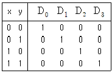
- 비교기(comparator)
- 멀티플렉서(Multiplexer)
- 디코더(Decoder)
- 인코더(Encoder)
(정답률: 알수없음)
84. 병렬 프로세서의 한 종류로 벡터 프로세서에서 많이 사용되는 방식으로 비디오 게임 콘솔이나 그래픽 카드와 같은 분야에 자주 적용되며 MMX에도 사용된 구조는?
- SIMD
- SISD
- MISD
- MIMD
(정답률: 64%)
85. 연산의 속도를 빠르게 하기 위하여 부동 소수점 연산을 전문적으로 수행하는 장치는?
- co-processor
- RAM
- ROM
- USB
(정답률: 60%)
86. 기계어를 기호(symbolic code)로 1대 1 대응시켜 만든 언어는?
- 어셈블리어
- 고급언어
- 컴파일러
- 언어 프로세서
(정답률: 알수없음)
87. 마이크로 오퍼레이션 중 가장 긴 것의 시간을 해당 마이크로 사이클 타임으로 정의하는 방식을 무엇이라 하는가?
- Fetch Status
- 동기 고정식
- 동기 가변식
- Interrupt Status
(정답률: 알수없음)
88. 10진수 9를 2진수로 표현할 때, 기수 패리티 코드화한 값으로 옳은 것은?
- 10010
- 10001
- 10011
- 01001
(정답률: 알수없음)
89. 입ㆍ출력 과정에서 CPU의 역할이 가장 큰 방식은?
- Programmed I/O
- Interrupt-Driver I/O
- DMA
- Channel I/O
(정답률: 알수없음)
90. 그레이 코드 10110110을 2진수로 바꾼 것으로 맞는 것은?
- 11011011
- 10101101
- 01001100
- 01101011
(정답률: 알수없음)
91. 방송국의 송신공중선으로부터 발사되는 강한 전파로 인하여 다른 전파와의 간섭이 일어나는 지역을 무엇이라고 하는가?
- 방송구역
- 블랭킷에어리어
- 복사지역
- 전파혼신구역
(정답률: 알수없음)
92. 다음 중 무선국 업무의 분류 중 공중이 직접 수신하도록 할 목적으로 송신하는 무선통신업무는?
- 고정업무
- 방송업무
- 해상이동업무
- 이동업무
(정답률: 알수없음)
93. 유선방송국 설비는 매월 방송신호를 측정 시험하여 그 결과를 기록 및 관리해야 하는 사항이 아닌 것은?
- 반사손실
- 스퓨리어스
- 혼변조도
- 반송파의 주파수 편차
(정답률: 알수없음)
94. 무선설비의 기술기준에서 수신설비의 충족조건이 아닌것은?
- 정합이 적정할 것
- 감도는 낮은 신호입력에서도 양호할 것
- 내부잡음이 적을 것
- 수신주파수는 운용범위 이내일 것
(정답률: 알수없음)
95. 감리원의 업무범위에 해당하지 않는 것은?
- 공시계획 및 공정표의 검토
- 공사업자가 작성한 시공상세도면의 검토ㆍ확인
- 공사진척 부분에 대한 조사 및 검사
- 하도급에 대한 결정
(정답률: 50%)
96. 다음 중 방송법에 의한 방송사업의 종류가 아닌 것은?
- 지상파방송사업
- 위성 방송사업
- 방송채널사용사업
- 중계유선사업
(정답률: 알수없음)
97. 다음 중 무선국 허가의 유효 기간에 맞지 않는 것은?
- 실험국, 실용화시험국 - 1년
- 해안지구국, 이동지구국 - 5년
- 기지국, 중계국 - 5년
- 아마추어국, 무선측위국 - 3년
(정답률: 알수없음)
98. 다음 중 경미한 공사로서 정보통신공사업자 이외의 자가시공 할 수 있는 것은?
- 간이무선국ㆍ아마추어무선국 설비 공사
- 방소케이블설비 공사
- 송출설비 공사
- 방송관로설비 공사
(정답률: 알수없음)
99. 다음 중 전송ㆍ선로설비를 이용하여 행하는 다채널 방송은?
- 종합유선 방송
- 지상파 방송
- 위성 방송
- 다중화 방송
(정답률: 알수없음)
100. 다음 중 전파진흥기본계획에 포함되어야 할 사항이 아닌 것은?
- 전파이용질서의 확립
- 전파환경의 개선
- 무선통신의 개발
- 전파전문인력의 양성
(정답률: 알수없음)